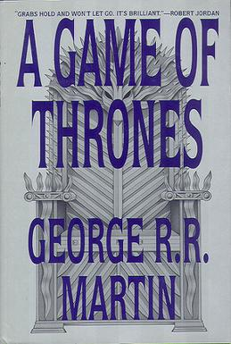
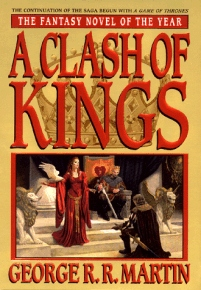
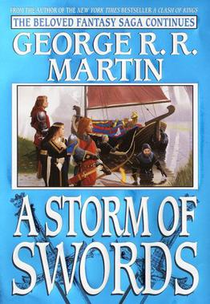

A Song of Ice and Fire - George R.R. Martin
A Song of Ice and Fire universe
- A Song of Ice and Fire series:
- A Game of Thrones (1996)
- A Clash of Kings (1998)
- A Storm of Swords (2000)
- A Feast for Crows (2005)
- A Dance with Dragons (2011)
- A Knight of the Seven Kingdoms
- The Hedge Knight (1998)
- The Sworn Sword (2003)
- The Mystery Knight (2010)
- Fire & Blood (2018)
First Edition Covers



POV Character with the Most Chapters in Each Book
| POV Character | A Game of Thrones | A Clash of Kings | A Storm of Swords | A Feast for Crows | A Dance with Dragons | Total Chapters |
|---|---|---|---|---|---|---|
| Eddard Stark | 15 | n/a | n/a | n/a | n/a | 15 |
| Tyrion Lannister | 9 | 15 | 11 | n/a | 12 | 47 |
| Arya Stark | 5 | 10 | 13 | 3 | 2 | 33 |
| Cersei Lannister | n/a | n/a | n/a | 10 | n/a | 10 |
| Jon Snow | 9 | 8 | 12 | n/a | 13 | 42 |
| Total POV Chapters (Displayed) | 147 | |||||